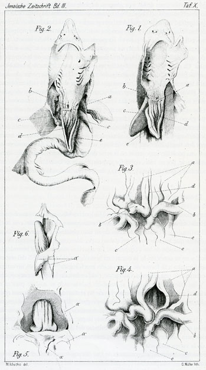
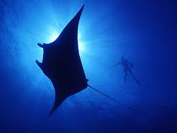
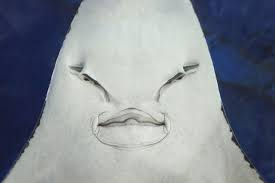

Introducción
Los seláceos son un grupo de peces cartilaginosos pertenecientes a la clase Chondrichthyes.
Este grupo incluye los tiburones, rayas y quimeras. Se diferencian de otros peces en que su
esqueleto está hecho de cartílago en lugar de hueso. Los seláceos son conocidos por su
importancia ecológica y su amplia variedad de formas y tamaños.

Características de los Seláceos
- Esqueleto Cartilaginoso: A diferencia de los peces óseos, los seláceos tienen un esqueleto compuesto de cartílago,
que es más ligero y flexible que el hueso.
- Piel y Escamas: La piel de los seláceos está cubierta de escamas placoides, también llamadas dentículos dérmicos,
que tienen una estructura similar a los dientes y ayudan a reducir la fricción con el agua y a proteger la piel.
- Aletas: Tienen aletas rígidas que son utilizadas para la locomoción. La aleta caudal suele ser asimétrica, con la
parte superior más larga que la inferior.
- Sistema de Lateral Lineal: Poseen un sistema de línea lateral que les permite detectar vibraciones y movimientos
en el agua.
- Mandíbulas: Las mandíbulas de los seláceos están formadas por varios cartilaginosos y se caracterizan por tener
varias filas de dientes afilados que se reemplazan continuamente.
- Respiración: Los seláceos suelen tener varias hendiduras branquiales (generalmente 5-7 pares en tiburones y rayas)
a lo largo de los lados de la cabeza que permiten el paso del agua para la respiración.
- Sentidos: Tienen sentidos altamente desarrollados, especialmente el sentido del olfato y la capacidad de detectar
campos eléctricos generados por otros organismos.

Clasificación de los Seláceos
- Tiburones (Orden Selachimorpha)
- Tiburones Galeidos: Incluye tiburones grandes como el tiburón blanco y el tiburón tigre.
- Tiburones Carcharhinidos: Incluye tiburones de tamaño mediano a grande como el tiburón de punta negra y el tiburón martillo.
- Tiburones Squalidos: Incluye tiburones de menor tamaño y de hábitats más profundos, como el tiburón de cabeza aplanada.
- Rayas y Mantas (Orden Batoidea)
- Rayas: Pueden ser de diversos tamaños y formas, desde las rayas de fondo marino hasta las rayas águila.
- Mantas: Incluye mantas y mobulas, que son rayas grandes con alas anchas
- Quimeras (Orden Holocephali)
- También conocidas como peces quiméridos o ratones de mar, tienen cuerpos más alargados y una apariencia más parecida a los peces óseos,
pero mantienen características cartilaginosas. Ejemplos incluyen la quimera de cola larga y la quimera de cabeza redonda.
ESCUALIFORMERAYIFORMES